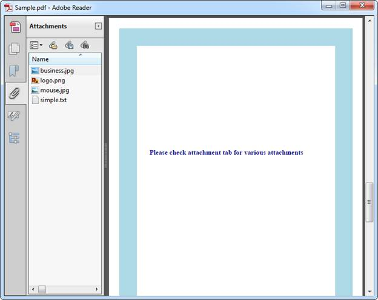

When a PDF document is opened in Adobe, by default, any one of the tabs in the Navigation pane can be expanded. It can be set using the PdfPageMode enumeration in Essential PDF. The following code snippet when executed, make Attachments as a default view.
|
[C#] PdfDocument document = new PdfDocument(); document.ViewerPreferences.PageMode = PdfPageMode.UseAttachments; |
|
[VB.NET] Dim document As New PdfDocument()
document.ViewerPreferences.PageMode = PdfPageMode.UseAttachments |

Figure 65: PDF with default view